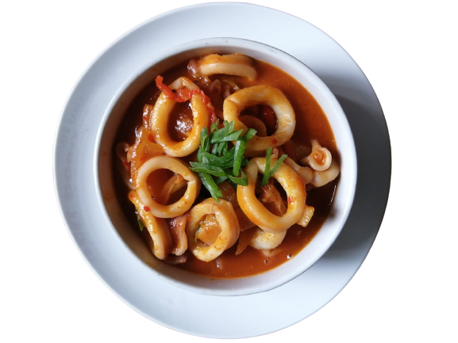

Cumi Saus Padang
Cumi saus padang merupakan salah satu olahan cumi-cumi dengan saus cabe melimpah sehingga rasanya pedas menyengat. Sedikit manis dan gurih. Tentunya paling enak dimakan hangat.
Bahan
| Bahan | Takaran |
|---|---|
| Cumi-cumi ukuran sedang | 500 gr |
| Air jeruk nipis | 1 sdm |
| Saus asam manis | 3 sdm |
| Minyak sayur | 2 sdm |
| Bawang putih | 2 siung |
| Bawang bombay (cincang kasar) | 20 gr |
| Cabai merah besar (iris besar) | 2 buah |
| Cabai merah giling | 1 sdt |
| Saus pedas | 4 sdm |
| Saus tomat | 2 sdm |
| Air jeruk nipis | 1 sdm |
| Gula pasir | 1 sdt |
| Merica bubuk | 1/2 sdt |
| Garam | 1 sdt |
| Air | 200 ml |
| Tepung kanji (larutkan dengan sedikit air) | 1 sdt |
Cara Membuat :
Step 1
Kupas kulit ari cumi, buang kantong tinta di badan dan matanya. Cuci hingga cumi benar-benar bersih.
Step 2
Lepaskan kepalanya dan iris melintang badan cumi.
Step 3
Kucuri air jeruk nipis, aduk-aduk dan sisihkan.
Step 4
Membuat Saus Asam Manis:
Tumis bawang putih dan bawang bombay hingga layu dan harum.
Masukkan cabe merah, aduk hingga layu.
Step 5
Masukkan potongan cumi, aduk hingga cumi kaku dan berwarna putih susu.
Step 6
Tambahkan cabe giling, saus cabe, saus tomat, air jeruk, gula, merica, garam dan air. Tutup wajan dan didihkan beberapa saat.
Step 7
Tuangi larutan kanji, aduk sebentar hingga mendidih lalu angkat.
Tips
Pilih cumi-cumi yang benar-benar segar. Warna kulitnya putih bening dan bukan keunguan. Cumi yang kurang segar membuat aroma masakan jadi anyir. Rasa pedas bisa disesuaikan dengan selera, jika suka pedas, cabe merah bisa diganti dengan cabe rawit merah.